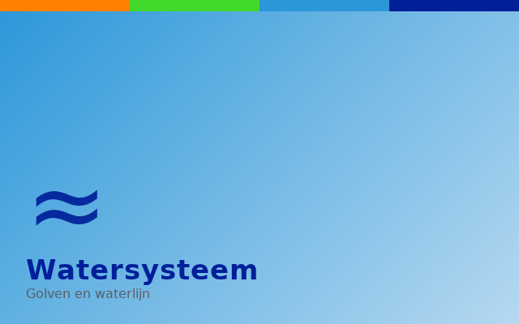
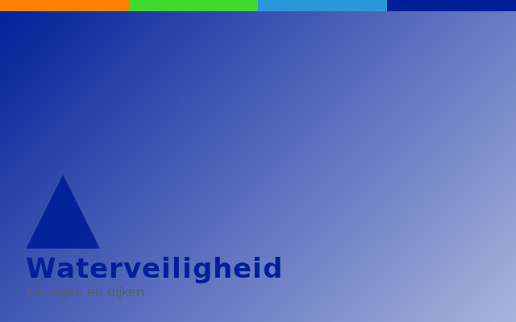

Waardevolle kleine Wateren, Bovenlopen Loolee
KRW inrichtingsmaatregelen in de waardevolle kleine wateren bovenlopen Loolee: Lemselerbeek, Weerseloschebeek, Rossumerbeek, Baasdammerbeek | …
Op deze pagina een selectie van de projecten waaraan DIESPE heeft bijgedragen — van watersysteem- en energieprojecten tot waterveiligheid en gebiedsontwikkeling. Wilt u meer weten over een specifiek project of over de aanpak? Neem gerust contact op.

KRW inrichtingsmaatregelen in de waardevolle kleine wateren bovenlopen Loolee: Lemselerbeek, Weerseloschebeek, Rossumerbeek, Baasdammerbeek | …
Verkenning voor programma aanpak klimaat robuust watersysteem 2100, KRW en Nationaal Bestuursakkoord Water (NBW) in samenhang met project Wold Aa | …
Verkenning voor programma aanpak klimaat robuust watersysteem 2100, KRW en Nationaal Bestuursakkoord Water (NBW) in samenhang met project Oude Vaart | …
Nieuw peil besluit voor veenweide gebied voor de oudste rationele polder van Nederland | …
Pre-verkenning voor project aanpak KRW en Nationaal Bestuursakkoord Water (NBW)…
KRW, 2,5 km 7 meter brede natuurvriendelijke oever, vier vispassages, baggerwerkzaamheden, herstel oeverbescherming.…
Verbetering van watersysteem tbv Nationaal Bestuursakkoord Water (NBW) ontwerp en aanleg van waterbergingen, automatische-, stuwen, duikers.…
Verbetering van watersysteem tbv Nationaal Bestuursakkoord Water (NBW) ontwerp en aanleg van waterbergingen, automatische-, stuwen, duikers.…
Verbetering van watersysteem tbv Nationaal Bestuursakkoord Water (NBW) ontwerp en aanleg van waterbergingen, automatische-, stuwen, duikers. | …
KRW, beekherstel, waterbodem verhoging, vispasseerbaar maken, profiel aanpassing, vergoten biodiversiteit vergoten…
KRW, waterkwaliteit verbetering door middel van natuurlijke nazuivering van effluent RWZI Winterswijk…
KRW, beekherstel, waterbodem verhoging, vispasseerbaar maken, profiel aanpassing, vergoten biodiversiteit vergoten | …
Beekherstel, waterbodem verhoging, vispasseerbaar maken, profiel aanpassing, vergoten biodiversiteit vergoten…
Beekherstel, water vasthouden, vergoten biodiversiteit vergoten…

Een van de grootse vispassage van Nederland, vergoten belevingswaarde, recreatie, aanleg zwaluwwand, herinrichting omgeving | …
Groot onderhoud aan bouwkundig en civiel onderdelen van stuw Doesburg…
Aanleg wateropvang en aanpassing watersysteem ter voorkoming wateroverlast in stedelijk gebied met uitgebreid burgerparticipatie proces | …
Aanleg technische vispassage en verbeteren peilbeheer Rijnstrangen gebied…
Verbeteren watersysteem, verminderen wateroverlast, herinrichting watersysteem, vervangen duikers, bouw (tussen-) gemalen, nieuwe duiker onder A348…
Opwaardering en renovatie, nieuwe betonnen slakhuispompen, elektrificatie, renovatie afsluit middelen…
Integrale herinrichting beek, vispasseerbaar maken, watervast houden, vergroten biodiversiteit, recreatie | …
Herinrichting beek, vispasseerbaar maken, watervast houden, vergroten biodiversiteit, recreatie, fietsverbinding | …
Aanleg waterretentie tbv stedelijk water nabij Streekziekenhuis Koning Beatrix te Winterswijk inclusief aanpassingen in aan- en afvoerend watersysteem…
Aanleg waterretentie tbv stedelijk water aan de Sibbinkweg te Winterswijk inclusief aanpassingen in aan- en afvoerend watersysteem…
Gebied dekkend meetnet bestaande uit 55 debietmeet locaties in openwater met telemetrie…

Ontwikkelen van windpark Duiven bestaande uit 2 windturbines met tip hoogte van 200 meter. | …

Realisatie van middenspanningsverbindingen en middenspanningstations, projectomvang €10 milj.…
Realisatie van middenspanningsverbindingen en middenspanningstations projectomvang €25 milj.…
Realisatie van middenspanningsverbindingen en middenspanningstations projectomvang €25 milj. | …
Realisatie van middenspanningsverbindingen en middenspanningstations projectomvang €15 milj.…
Realisatie van middenspanningsverbindingen en middenspanningstations projectomvang €24 milj.…
Ontwikkelen van windpark IJsselwind bestaande uit 3 windturbines. | …

Amoveren en nieuwbouw van verbindingsput tussen hoofdafvoer Arnhem-noord en Velp en zinkers onder IJssel | …

Realisatie van 25 kilometer riool- en industrieelafvalwater transportleidingen, twee nieuwe gemalen en ombouw van drie gemalen | …
Realisatie van afvalwatertransportsysteem en bouw rioolwater gemaal…
Realisatie van industrieel afvalwatertransportsysteem en bouw afvalwatergemaal…
Renovatie en uitbreiding van bedrijfsgebouw van RWZI Lichtenvoorde…
Verwijderen van Asbestcement 800mm transportleiding uit Berkel dal tussen Lochem en Zutphen…
Realisatie van afvalwater transportleidingen en 2 rioolwatergemalen | …
Aanleg afvalwatertransportleiding en 3 gemalen…
Aanleg afvalwatertransportleiding, saneren overstort…
Renovatie van diverse rioolgemalen w.o. Duiven, Didam, Westervoort, etc…

Onderzoek na hoogwaterbeschermingsopgave waterkering Tuindorp…
Aanleg ‘harde’ hoogwaterkering in stedelijk gebied | …

Realisatie van een nieuwe BMX-accommodatie voor de vereniging Fietscrossclub Lichtenvoorde.…